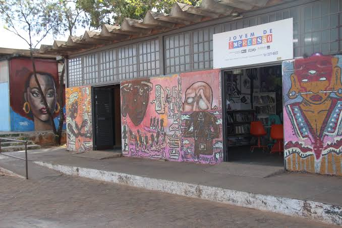

Espaço Jovem de Expressão
Localização: Ceilândia - DF

Juventude e expressão
O Espaço Jovem de Expressão desenvolve atividades culturais e formativas com jovens de Ceilândia. Consulte a programação e os canais oficiais para informações sobre atividades abertas ao público.